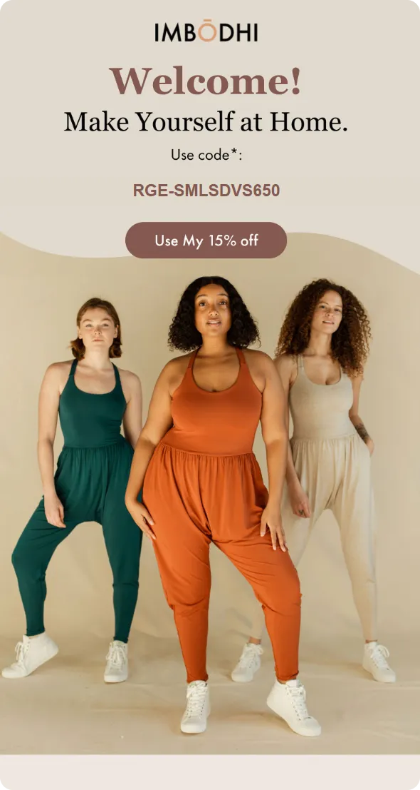
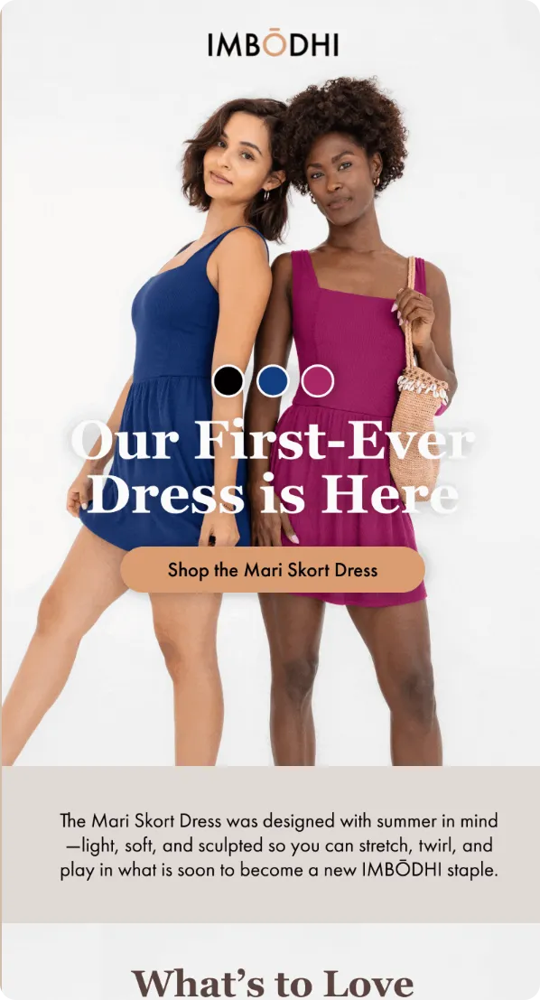
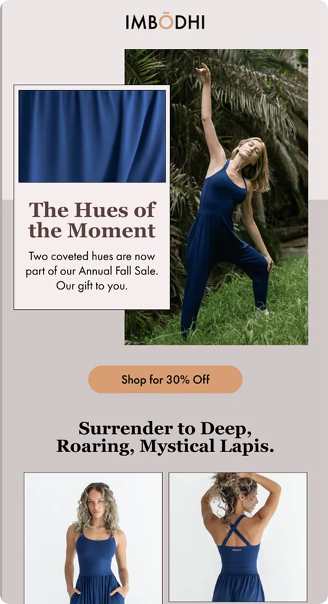
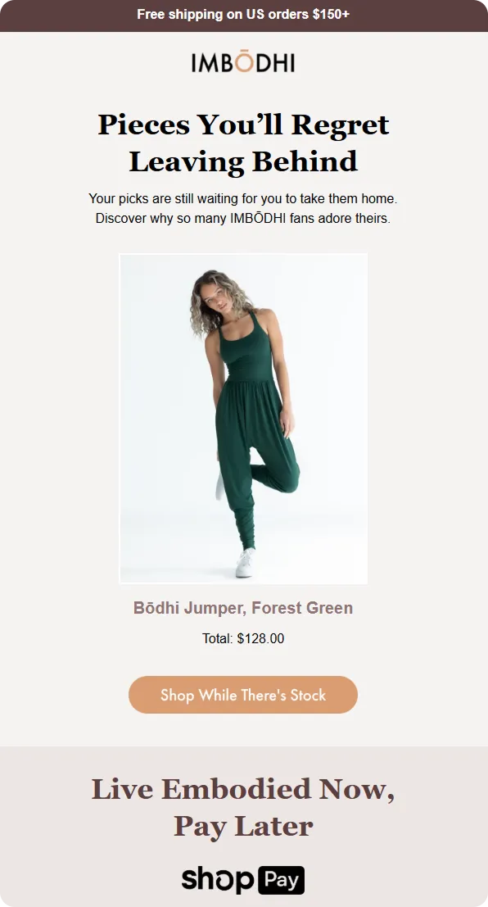
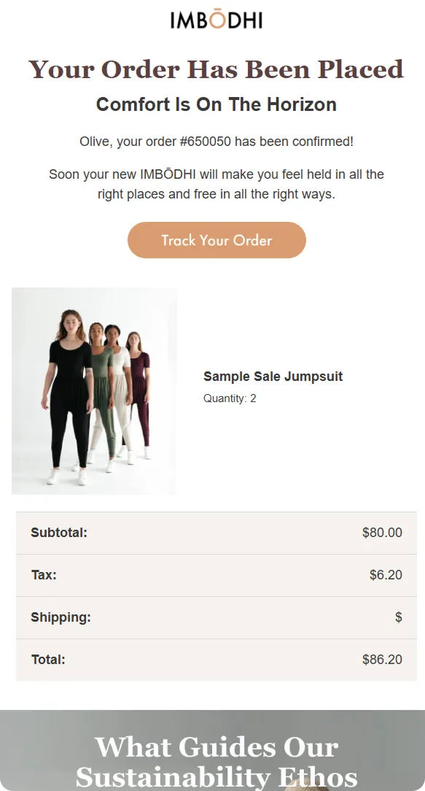
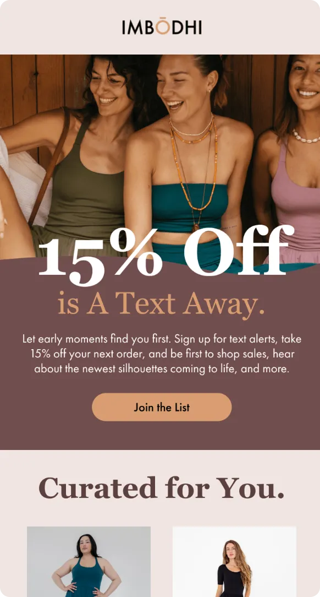

How do you turn ecommerce emails into consistent revenue drivers instead of one-off creative guesses?
In this episode of Feedback Friday, Matt Helbig sits down with Kasey Luck of Luck & Co to review real emails—from welcome flows to product launches to abandoned carts—and break down why they work. They explore how brand tone, accessibility choices, mobile-first layouts, and thoughtful UX details shape emails that feel intentional and convert better. You'll learn how testimonials, urgency, dynamic blocks, and SMS strategy contribute to a smoother customer journey, from sign-up to repeat purchase.
It’s a practical look at how clear structure, brand insight, and small design decisions can make every email feel smarter and more strategic.
TL;DR
- Why welcome emails, testimonials, and brand tone matter in early impressions
- How mobile-first design and accessibility improve usability and conversions
- What makes product launch emails more persuasive than simple “new drop” announcements
- Why the abandoned cart strategy depends on personalization, social proof, and urgency
- How SMS as a VIP channel boosts retention and repeat purchases
Matt Helbig: What's up? Email geeks, welcome back to another episode of Feedback Friday, where we examine emails and discuss why they are truly effective. I'm joined this week by Kasey Luck. How's it going?
Kasey Luck: Hey, Matt. I'm doing great. Thank you so much for having me. I'm so excited.
Matt Helbig: Well, I would say your YouTube channel is amazing. Every time I watch a video, I learn something new, even after working in email for over 10 years. You're doing an amazing job out there. Keep up the great work.
Kasey Luck: Thank you. That's so sweet. Thank you so much. It's a lot of effort, and I feel bad for not doing more, so hearing this really means a lot.
Matt Helbig: Every video is a gift, but these are some of your emails for this Feedback Friday. I'm excited to review some of your work because you often discuss your skills as an email marketer on your YouTube channel, but we're actually going to see if you can back it up now.
Kasey Luck: Let's do that. I'm ready. For some context, this is my agency's work. I run Luck and Co Agency. I've been doing that for close to six years now. I keep saying five, but it'll be six years at the end of this year. This is my team's work, but we're all one team, and I am just as responsible for it as anyone else working on it. I'm ready to take the heat.
Matt Helbig: We'll take it easy on you, I promise. So, do you want to introduce a little bit about this brand?(See the full email)
Kasey Luck: This is In Imbodhi. We've been working with them since 2022, which is approximately three and a half years, or close to four years. They are a lifestyle brand selling very unique clothing. They're sustainable, with a very authentic brand tone and voice, and very earthy visual tones. They started with a hero product when we first began working with them, but since then, they've introduced numerous new products. Now they're known for many different things. What we see here in the image, I believe, was the hero product that they initially grew with.
Matt Helbig: Cool. Awesome. This appears to be the first welcome email I would receive after signing up on the website. It's quite clear from the welcome messaging. I like the “make yourself at home”; that's a nice little touch. Having a promo code here for 15% off is great. Scrolling down the email, we come to the body copy, which discusses the product. Then we have a section with testimonials. It's nice to see some five-star reviews, accompanied by a little rotating GIF. “Try it for yourself” is a pretty focused CTA. So what captures your attention at the top? When putting this together, is there anything that really stands out to you that you particularly like?
Kasey Luck: I think that above-the-scroll part—the first thing we see when we open the email—does a good job of transmitting the tone and ethos of the brand. Very earthy tones, we see the hero product, and it all looks very smooth, kind, and welcoming, which is what this brand is about. I love that the CTA is so high up. We try to do that because it's great for click-through rate, though we don't always get to. This time it is really high up, which is great. It definitely helps with conversion rates as well. Something we try to be conscious about is repeating the offer and making it very clear multiple times. I guess we’re only doing that once with the button here, but I feel like it's enough. It makes it clear that they get 15% off with the button, and the code is right there and copy-pastable. Those are the good things that stand out to me.
Matt Helbig: Yeah, I like it. I like this little wavy transition. Over the last couple of years, we've seen this emerge frequently—almost too much—but I think it works well here in conjunction with the rest of the product. On mobile, you actually see a different wave, which is a cool effect. With this product suite and brand, it makes sense to introduce something more organic or nature-based that ties into the rest of the products.
Kasey Luck: I like this one over here. What stands out is that it really jumps out at me: I would add another CTA under the paragraph text right here. It feels like it's missing. Yeah, for people who actually do read and will read all of this paragraph copy—which, you know, a lot of haters are going to say is too much copy—but we can talk about it. This brand actually sees better results with more lengthy, poetic copy. However, the button could benefit from another button.
Matt Helbig: I agree. I could see a lot of people taking action up here, but like you said, maybe another CTA. I would love this to be plain text. It appears to have good alt text; on mobile, hovering over it seems to work fine. Reorganizing or re-spacing that paragraph makes it more accessible. It doesn't shrink down, so the text remains readable on mobile devices. As a piece of copy, it's a nice bite-sized piece. What is the value, for you, of adding something like this in a welcome email—like having testimonials?
Kasey Luck: This is where the shopper's intent is at its highest. They subscribe through the pop-up, they want that discount, and they're probably seriously considering buying from this brand. We just need to get them over that finish line. Testimonials and reviews from other customers definitely help. Welcome Email 1 is one area where we conduct A/B testing on a regular basis. We have a very robust experimentation culture in general at Luck and Co. We like to A/B test concepts more than subject lines or colors. I'm sure this is something that has been tested and helped drive conversions.
Matt Helbig: Scrolling down, we encounter a small lockup that connects some of the text to these icons, highlighting the benefits of the product. Sustainable packaging, fabric sourcing—things important to people and possibly reasons they’re paying a premium.
Kasey Luck: The “code expires in seven days” would probably be placed right under the code or the button. I don't know why we hide it so much. It's something I enjoy doing. Perhaps the design doesn't look as nice.
Matt Helbig: I think it works for legal. Maybe even less of an asterisk, and work the expiration into the copy so it doesn't feel too legal-heavy. Something like “Use your code within seven days,” or “Check out within the week.” Or even: “Use code (expires in 7 days).” I don't see that welcome offer expiring, but it's good to know. Maybe it's an urgency thing.
Kasey Luck: We always make it expire. We like it; it's a thing for us. Even seven days is kind of generous. We can definitely see that with an expiration date, people use it much more quickly and often. I have a question for you about making this text plain. We'll likely discuss accessibility in depth today. I can see a case for making that paragraph live text, because it's just text on a plain background—easy to replicate. However, with other designs, it's more challenging. However, if we do that here, the font will look very different from the rest of the email. That visual inconsistency is something our clients and we don't like. How do you see that trade-off?
Matt Helbig: Some email clients support web fonts, which can allow for the use of specific brand fonts. There are web-safe fallbacks. Many websites already have a fallback font. To me, it's not an all-or-nothing thing. Not every part of the email needs to be live text. You can look for opportunities where live text genuinely helps. For example, if a Spanish-speaking person is reading this email, they can't translate it because the text is baked into an image. Accessibility in that sense can also be helpful. In this tool, we don't display the no-image mode; however, if images are disabled, you will only see the code. Everything else would be blank, which isn’t ideal. A CTA or some core messaging in live text would still be visible. So yes, brand consistency is important, but accessibility also matters. Some people may notice a slightly different font, but I’m not sure if that would deter them from making a purchase.
Kasey Luck: Yeah, I think it really matters. Obviously, it's best if everything is accessible; however, there's a trade-off, and we make decisions based on those trade-offs. That decision, I think, should be specific to each brand. For example, you mentioned a Spanish-speaking person might be reading this. I immediately thought, well, they don’t sell in Spain. I actually don't know where they sell—maybe they sell worldwide. However, even if they didn't, there are many Spanish-speaking people in the US as well. So that reasoning doesn’t work.
Matt Helbig: I mean, people who may have increased the font size on their phone or screen readers. It appears that you have some effective alt text on these sections.
Kasey Luck: We do, yeah.
Matt Helbig: So that's definitely a good benefit. I think that covers your bases in a lot of ways. But there could still be opportunities. If we were to build this in our Beefree builder, this would be a four-by-four grid, and you could lay it out. Perhaps the fonts wouldn't look exactly the same everywhere—maybe they wouldn't display correctly in Outlook—but if I had images turned off, I would still understand what this is, not just from the alt text. Things like this: if it's a gif, sometimes we don’t love text being locked up in a gif, but for this section, it makes sense since it’s rotating through the reviews. It doesn’t have to be everywhere, but when it comes to accessibility, there are some places where it makes sense. I think you also solve a lot of issues by doing different layouts for desktop and mobile. Some brands maintain the desktop view, which becomes too small and difficult to read on mobile. By creating a separate image export for mobile, you resolve many of those issues. For example, if a CTA were too small, I couldn’t even tap it on a phone. However, you do a good job of keeping it large enough to tap comfortably on mobile devices.
Kasey Luck: Thank you. Yeah, we're very meticulous about having a mobile version that works.
Matt Helbig: To me, that's a significant priority, especially in e-commerce, where many lists skew heavily toward mobile. I think focusing on mobile is also part of accessibility. Even if it's not live text, ensuring it's accessible on mobile is a significant consideration. I think you're doing a good job, and I like this email. My last piece of feedback from my notes is this: I sometimes personally prefer to see lifestyle images, but I also want to see the actual products. Perhaps having a section that showcases best sellers, or a starting point to better understand the catalog, could help bring me back to the discount code. This is clear—I'm going to go back and use it on my cart. However, if I signed up just for emails, it might be beneficial to showcase some of the most popular products as a standalone module, rather than just lifestyle images and text. That’s my personal opinion.
Kasey Luck: That's fair. Yeah, I can see that.
Matt Helbig: Cool. I think that’s actually a good idea to A/B test here. Sweet. Alright, let's keep moving to the next email. We have another engaging GIF at the top. Would you like to discuss this(See the full image here)
Kasey Luck: Yes, this was a new product launch email where they introduced the dress. I want to make sure I name it correctly: the Mari Skort. Yes—the Mari Skort dress. Something important for us to highlight here is that it has pockets, because that's one of the most frequently asked questions, Imodhi. Here, we have beautiful hero images showcasing the colors the product is available in, ensuring people can take action. But when we scroll down, we emphasize the different details and the pockets because that’s what people tend to be interested in.
Matt Helbig: Very cool. When I was analyzing these emails with a bit of AI, AI really liked this section for whatever reason. There you go. This kind of breakdown provides a detailed view that's unique and not often seen in fashion emails. Usually, you just see a model, a price, and a button. But for a launch email, this approach feels almost like a tech product breakdown, highlighting the micro-details. It highlights the various aspects of the product that I might actually care about. If it’s built-in shorts, that’s cool. And this is a fun CTA instead of just “Buy Now.” I really like this section.
Kasey Luck: Cool. One thing that really helps our work is staying in touch with customer support teams, as you learn a lot of details that aid conversions. I would’ve never guessed that pockets are such a big factor, although thinking about it, I get it. Knowing this was a frequently asked question helped make this a high-converting email.
Matt Helbig: Cool. I had some comments on the GIF. I think this text is a bit difficult to read in some of the white-on-white sections here. It’s hard sometimes—maybe adding an extra layer of opacity. Obviously, you want to see the product, but some additional contrast would help. Identifying colors like this is smart, but it almost feels like an interactive element—something I'd want to click to switch the colors. It's a UI pattern from the web, so it doesn’t really make sense here.
Kasey Luck: That’s what I wanted to do, too, when I first saw it. We actually have created interactive emails in the past where you click, and they interact with you, but that only works on desktop, not on mobile. So we don’t use that often. It doesn’t work like that here. However, I personally—even though it’s a little clickbait or gray-hat—like using tricks where you want to click something because you think it does something, and then it takes you to the site. Because that’s what I want: I want to take you to the site. Some people might find it annoying, but ultimately, the more people we drive to the site, the better.
Matt Helbig: That is the main goal of the campaign. I don’t think it detracts from the email. It’s just an interesting UI element that can be used for good or bad. Scrolling down, again, it makes sense that you reworked the mobile text for that section. It’s very readable. The bottom footer section is clean, featuring the “shop now, pay later” module. Pretty solid email. Out of the emails we reviewed for this brand, this is one of the better ones. Is there anything else you’d add or change if you had the chance to resend this?
Kasey Luck: From what I heard from my team, it performed really well. What you said about the contrast makes sense. I see the team attempted to fix it with a little shadow, but it’s not enough. So maybe adjusting that. Other than that, it looks solid.
Matt Helbig: Cool. Short and sweet, and like you said, I like a campaign with a singular focus. It's clear what to do next: view the product, shop for it. That's the main part of the CTA. Very clear on next steps. Alright, the next email appears to be an annual fall sale-type email. These are pretty popular. What about this one—what do you like?
(See the full email)
Kasey Luck: Can we see the subject line? I know the theme is “new to sale,” so these were new products added to sale. I’d be curious to see the subject line. "New to sale" is the subject line. New to sale. Okay, great. Because that’s what we’re missing from the header. As long as it’s in the subject line, that works. The subject line is NEW TO SALE, all caps. This was sent during a long sale period, and the team wanted to add an additional email to make it more interesting. They positioned it as “new products added to sale.” Behind-the-scenes context: this was done during the Black Friday sale. One thing that is missing for me is making it clear that this is a Black Friday sale. Although if I receive this on November 30th, I know it's Black Friday, I don't need an additional label. Oh, it says “Annual Fall Sale.” That’s what Bodhi calls their sale. Instead of calling it a Black Friday sale, they refer to it as an “annual fall sale.” So we kind of do that here, but it’s not screaming “Black Friday,” which is probably just the ethos of this brand. This is their style.
Matt Helbig: Yeah. If it were Black Friday, it might have more urgency, such as “ends at midnight on X date” or something similar. Yeah. But overall, I think I like this one. I like how this headline is nicely crafted, and I appreciate how the CTA aligns with the product for both. I think that's a nice touch, using these brand colors to tie the product in. I think that's a fun idea. Do you agree that you prefer the CTA to be all one color?
Kasey Luck: No, sorry, I didn’t know. I agree with you. I was just… I mean, I think this is a great idea. I thought, 'Yeah, this looks great.' I honestly do think that this looks really great. I just feel bad about saying, “Yeah, our emails look amazing, they're the best.”
Matt Helbig: No, I think they are good. I think they look… I think it’s smart, and it effectively conveys that message. Maybe this 30% off could be more prominent if the discount is really important to people. It does sound like, in the context of many other emails, it might be clear that, especially if there isn’t a code they have to use, when they go shopping, it will be automatically applied or something similar. So, yeah. I think this one makes a lot of sense. It does have a countdown timer here, showing when the sale ends. On the urgency side, I wonder if it’s that important. If this is around Black Friday, I mean, 12/3 is a pretty good time window to do that.
Kasey Luck: Yeah. That’s one thing that we do. If showing the deadline is not actually beneficial to us, and it is more than three days, it is counterproductive to inform people of the deadline, because they will then procrastinate. Three days is probably the cutoff. So maybe that was the thinking here.
Matt Helbig: Cool. Well, I like this one. I believe that many brands have observed a trend over the years of not emphasizing Black Friday messaging as much. We’ve had discussions at various conferences about how Black Friday can sometimes tarnish a brand. In a way, I think that for a premium product like this, being a little more strategic about how you discuss a sale, rather than relying heavily on discount language, makes sense. I’m sure Gymshark will have a big campaign, or some of these athletic brands will offer heavy discounts, such as “save 70% on last season’s product” or something similar. I think this is a good positioning strategy to avoid direct competition with that.
Kasey Luck: Yeah. I agree. And this is what Imbodhi is going for, definitely.
Matt Helbig: Cool. Alright, we’ve got an abandoned cart here. I really like this one. The subject line for this one was “I caved, and I’m not sorry,” which I really like. I think that's a really smart subject line. So what do you like about this one?
(See the full email)
Kasey Luck: That was probably taken from a review. That is where we often draw inspiration for our email content. I love most things here. Something that I am really big on for abandoned checkout emails is always including the person's first name, because we have it. People have to fill out their first name when they start a checkout and then abandon it. Personalizing with the first name generally helps with everything: how the email is perceived and where it is placed in the inbox. So I'm usually very strict when I don't see a first name in an abandoned checkout email. And we don't have it here, unless you took it off, which I don't think you did.
Matt Helbig: I didn't for this one, no.
Kasey Luck: Okay. So that's one thing that stands out to me. However, I know that this is the second email in the sequence, in the abandoned checkout sequence. It’s not the first email, so maybe we can personalize it with the first name elsewhere.
Matt Helbig: If you were to personalize it, where would it reside? Would it live in this copy or in the…?
Kasey Luck: Here. I would put it there. Yeah, I’d be like, “Hey Casey, your pieces are still waiting for you to take from home to…” Some of the behind-the-scenes details are that this checkout product, the abandoned product block, has numerous customizations. If there is one product, it is centered in that way. If there are two products, they are side by side. If there are more than two products, we only show two products. We also hide things like shipping protection and other add-ons. We have additional code that hides those, so we don’t highlight them with the huge, ugly placeholder item that Shopify has for that. So those are some of the behind-the-scenes details. For abandoned checkout emails, we try to keep them focused. This is what you need to do. We also want to have a reason for emailing a person every time we do. Therefore, we avoid sending an abandoned checkout email that only contains the abandoned product block, without any additional content. As a shopper, why should I buy this? I was already considering it. Yes, perhaps some people simply forget and need a reminder, but we believe that, in addition to reminding them, we also want to provide them with another reason to shop. In this particular email, we chose to remind them that they have payment options, because these products are on the higher end in terms of price. Then we have a social proof block in the form of UGC from Instagram, so these are products worn by customers.
Matt Helbig: That's cool. Yeah, I think it’s cool to connect something you see in your cart with a person wearing it. I think that's a smart play. And I do really like the live text here. I think that’s a good piece. This low stock messaging is also a big motivator for me, as I’ve seen many other people use it. They’ll even have launch emails that say, “Last time we launched this, it went out of stock in 24 hours, make sure to pick it up while you can.” So that’s nice to see. Another scenario that could occur is if something they had previously abandoned went out of stock. If it’s back in stock and they still haven’t checked out, that might be another message people could try, especially if they’ve never seen it before. It’s kind of a small idea. Alright, well, guess what? We actually did buy this. Wow. We were convinced. I needed a jumpsuit. It was missing in my life, so I’m glad I did that. What do you like about this one?
(See the full email)
Kasey Luck: This is the order confirmation email. We moved that from Shopify into Klaviyo, so we’re sending this from Klaviyo. It’s a transactional email, so there’s a limit on what we can do here. It seems straightforward and clear, providing me with the necessary information for my order. There’s a clear CTA to track my order if I want to. Ultimately, we reinforce the brand values, not necessarily the brand story itself, but rather the brand values, continuing the journey of educating the customer about this brand. We’re building the foundation for them to come back and purchase from us again, because they love not only the product, which feels amazing, comfortable, and really great, but also because they identify with the brand's values. That is the thinking behind this block.
Matt Helbig: That's smart. Yeah. I think a receipt is always a great opportunity to do more than just show the required information. It’s nice to see something like this. It may encourage people to lean more towards advocacy once they receive the product. There are also nice features here, such as an FAQ page that addresses any issues with my order. All those things build a bit of trust and make people feel good about their purchase.
Kasey Luck: You have a great attention to detail.
Matt Helbig: Hey, it’s my job. Alright, the last email we have here is an SMS push that you let me know is part of a post-purchase flow, actually.
(See the full email)
Kasey Luck: Yep. This is also from a post-purchase flow. It's the post-purchase flow triggered by the “delivered” metric, so after the product has been delivered. I think this is email three in that particular sequence. There are product education and care instructions that come before this. At this point, the flow is split based on whether a person is an SMS subscriber or not. If they're not an SMS subscriber, then they receive this email. If they are an SMS subscriber, they receive something else. For Imbodhi, and for many of the brands we work with, we position SMS as this VIP channel that gets first dibs on everything. Sometimes they receive extra promotions, extra savings, and other benefits. Therefore, it makes sense for us to try to acquire as many customers as possible through the SMS channel. If somebody has bought a product and they're not on SMS, that's unusual. They should be, and that’s our thinking behind this. Especially for Imbodhi, because it's not fast fashion. It's not T-shirts. Many of their customers make a single purchase, and then they must work hard to encourage them to make a second purchase. Having a phone number enables us to engage in SMS marketing, which is particularly helpful in achieving that goal. So that's the strategy behind this.
Matt Helbig: Cool. Yeah, I like this one. Even just a little preview here, letting them know what they can expect when they subscribe, is nice to see. And this section, I think, is pretty smart—maybe pulling in some things based on their purchases or bestseller data.
Kasey Luck: This is a dynamic product block. Yeah. I looked it up. It's recommended products based on both purchase history and browsing history, excluding products that are out of stock, and one other condition. So it is personalized.
Matt Helbig: Nice. Short and sweet. People are always looking for inspiration for these SMS things, and with some segmentation, it becomes a more targeted email that can get them to subscribe if you really want them on that list. So, yeah. Yeah. Sweet. Alright, well, thanks for taking the time to look at this brand. Do you have any other thoughts or comments on this one?
Kasey Luck: Go check out Imbodhi. They are a truly exceptional brand. There’s a very thoughtful team behind it. We're a smaller, boutique agency that doesn’t work with a large number of brands, and we love working with brands that bring something unique to the world beyond just their product. That team is definitely doing that. It’s been a pleasure working with them. It’s been fun reviewing these emails. I think some of these were created a long time ago, and they still look good. There’s always an opportunity to optimize something, so some of the things you mentioned were very helpful, and I’m going to pass them on to the team.
Matt Helbig: We’ll definitely keep an eye on these emails, subscribe to the list, and add some more to Really Good Emails. Where can people find you? Your YouTube channel is the best place for people to find you.
Kasey Luck: Yep. If you go to YouTube and search for Casey Luck, it should be easy to find. And don't forget to check out our agency’s website too: it’s Luckandco. agency. We do email and SMS for e-commerce brands.
Matt Helbig: Awesome. Great. Thanks again.